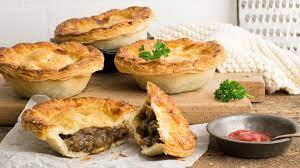

The Not So Humble Mince Pie!

The humble mince pie is part of the only true family of pie, the meat pie. No fruity nonsense!
Ingredients
- 1 Tbsp oil
- 1 onion, finely chopped
- 2 cloves garlic, crushed
- 500g lean beef mince
- 1½ Tbsp Edmonds standard grade flour
- ½ cup beef stock
- 2 Tbsp tomato purée
- salt and pepper
- 400g Short Pastry
- 2 sheets of flaky puff pastry
- 1 egg yolk
- 1 Tbsp water
Steps
- Put the oil, onion and garlic into a frying pan and cook gently, stirring until the onion is golden – about 15 minutes. Don’t rush it or the onion will be crunchy rather than sweet and melting.
- Add the beef mince. Increase the heat and cook quickly until the meat is browned and crumbly. Stir in the flour and cook for 30 seconds.
- Gradually add the stock and bring the mixture to the boil, stirring constantly. Add the tomato purée and salt and pepper to taste. Simmer gently for 10 minutes, then setaside to cool.
- Preheat the oven to 200°C.
- Cut the pastry in half and on a lightly floured board roll out one half, or use the ready-rolled sheets of short pastry. Line a 22cm pie dish or cut out 18 circles with a 7cm cutter and line patty tins.
- Wet the edges of the pastry and then spoon in the meat filling.
- Roll out the remaining pastry to fit the top of a large pie, or cut out circles with a 6cm cutter from the ready-rolled flaky puff pastry for the small pies.
- Carefully place the pastry over the filling and press the edges together to seal. Finish with any pastry trimmings rolled out and cut into decorative shapes.
- Combine the egg yolk and water and brush over the tops of the pies. Make two slits in the top of a large pie or one in each of the small pies.
- Bake for 25 minutes for a large pie and about 15 minutes for the small pies, until the pastry is a dark golden brown.
Return to Index